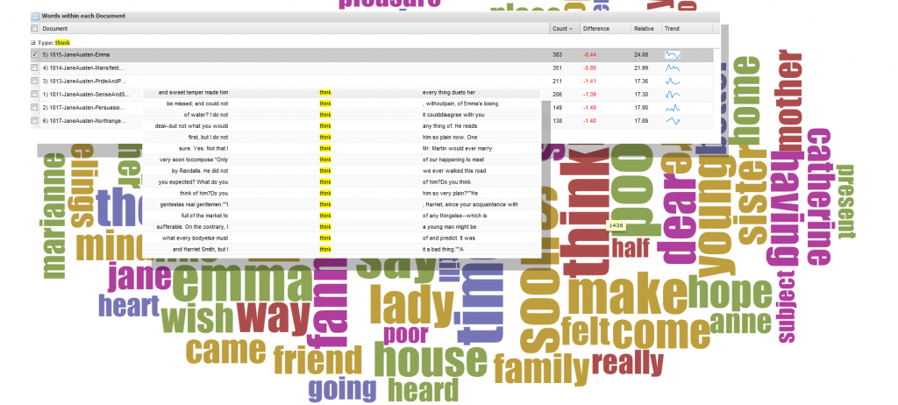
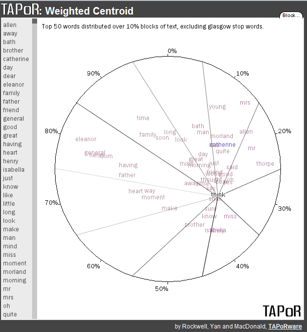
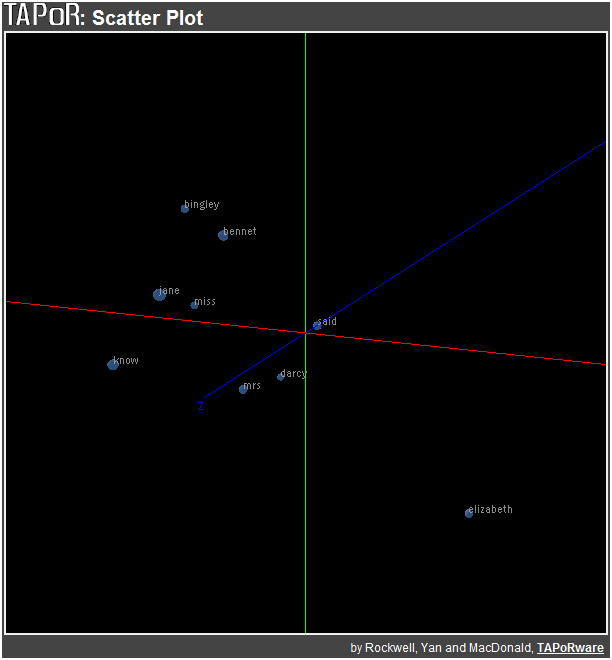
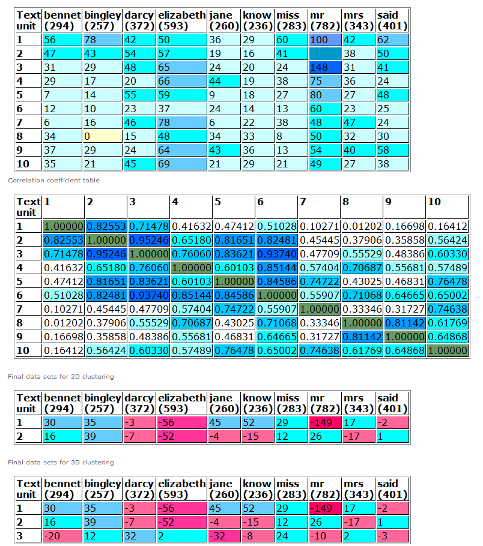
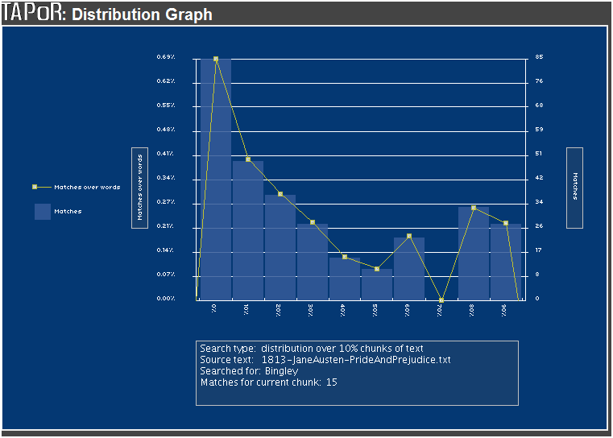

This year’s conference has a tempting selection of workshops and among them is Visualizing Literary History, provided by Susan Brown, Stan Ruecker, Geoffrey Rockwell and Stéfan Sinclair–which I’m in the process of attending. The workshop focuses on a suite of tools developed by TAPoR and focused on the act of enriching the object of study through examination using computational methods, following the concept of algorithmic criticism as described by Stephen Ramsay. These tools support interpretive activity to supplement close reading as conceived by Franco Moretti. They work on tokenized text, which is the result of software having broken a narrative into atomic elements, sometimes looking at lemmas or ignoring frequently used words or appending the part-of-speech to the word. The results of that tokenization process are visualized using a wide variety of tools, one of which will produce an indexed word cloud that provides trends within the texts examined as well as concordances of that word.

One version of Voyeur, a Digital Humanities tool developed by TAPoR (Text Analysis Portal for Research)
Another method provided by TAPoR for analysis of texts is a weighted centroid visualization that will provide you with a map of high frequency word occurence within a text.

- A weighted centroid visualization of Austen’s Northanger Abbey made with TAPoR’s Weighted Centroid tool.
A further method of visual representation of a text is the use of principle component analysis, which breaks down a text into constituent pieces (such as paragraphs, chapters or 10% blocks) and compares word occurrence over these components. In this way, a scholar can see if Darcy and Bingley have different trajectories (as words) over the course of the novel.

Pride and Prejudice as a 3D representation of Principle Component Analysis using TAPoR's PCA tool
The same data, presented in tabular format, is available from the tool:

Principle Component Analysis of Pride and Prejudice in tabular format
And, finally, distribution over time of a particular word within a text:

Distribution of the word Bingley demonstrates the progressive disappearance of the character as a plot-point
Along with each of these individual tools, the workshop also demonstrated a text analysis browser known as Voyeur, which Rockwell describes as “a distant reading environment” allowing one to examine trends between texts and explore and compare a variety of texts.
All that and there’s still half a day more of this workshop to go.